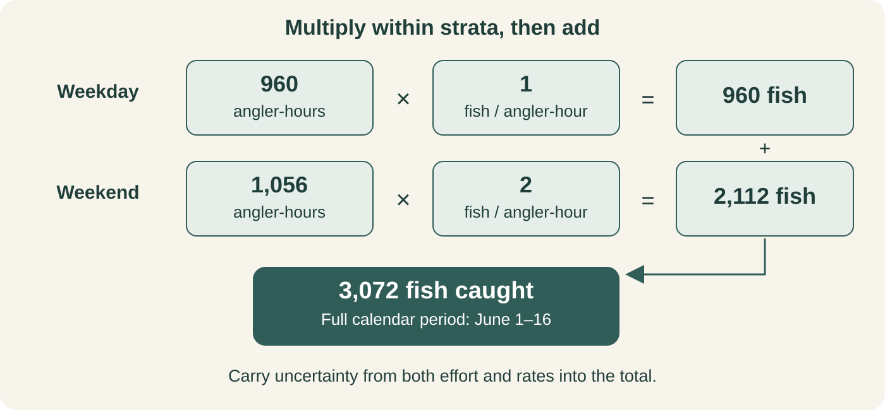

From Angler-Hours to Fish: Estimating Catch, Harvest, and Release
Matching interview rates to fishing effort before expanding the total

The previous post turned instantaneous counts into angler-hours. That answers how much fishing occurred across the survey period. To estimate how many fish were caught, kept, or released, we need the other side of the calculation: a rate from interviews.
The arithmetic looks simple. Multiply angler-hours by fish per angler-hour and the hours cancel, leaving fish. The harder question is whether those two estimates describe the same anglers, places, and periods.
That question matters even in a small weekday/weekend design. If weekend anglers catch fish at a higher rate, a sample with many weekend interviews can produce a pooled rate that does not match the distribution of fishing effort.
In brief
- Counts supply total effort; interviews supply catch, harvest, and release rates.
- Match each rate to the effort for its survey stratum, then add the products.
- Specify the full-period target when that is the total you want to report.
- Carry uncertainty from both components into the fish total.
This example uses tidycreel 7.0.0, “Goldeye”, and simulated observations. You can download the complete R example to run the calculation from start to finish.
Catch, harvest, and release describe different outcomes
Here, catch includes every fish caught. Harvest counts the fish kept, and release counts the fish returned to the water. The example records both outcomes for one species, bluegill.
| Quantity | Interview information | Rate unit | Expanded total |
|---|---|---|---|
| Catch | All fish caught | Fish per angler-hour | Fish caught |
| Harvest | Fish kept | Fish per angler-hour | Fish harvested |
| Release | Fish released | Fish per angler-hour | Fish released |
These are estimates of fishing outcomes. A release total does not estimate post-release mortality, and a catch total does not count unique individual fish if a fish can be caught more than once.
The roving-interview post explained why the interview protocol determines the rate estimator. This example uses completed access-point trips and ratio-of-means rates: fish reported by the interview sample divided by its angler-hours, with the survey design supplying the weights.
An access-point example does not change how roving observations should be analyzed. Preserve the interview type and trip information collected in the field when building your own design.
Start with the same effort design
We keep the June 1–16 calendar from the effort post. It contains ten weekdays and six weekend days, with counts on five weekdays and three weekend days. Each count represents an eight-hour fishing period.
library(tidycreel)
dates <- seq(as.Date("2024-06-01"), as.Date("2024-06-16"), by = "day")
calendar <- data.frame(
date = dates,
day_type = ifelse(
as.integer(format(dates, "%u")) >= 6L,
"weekend", "weekday"
)
)
sample_dates <- as.Date(c(
"2024-06-03", "2024-06-05", "2024-06-07",
"2024-06-11", "2024-06-13",
"2024-06-01", "2024-06-08", "2024-06-15"
))
counts <- data.frame(
date = sample_dates,
day_type = c(rep("weekday", 5), rep("weekend", 3)),
n_anglers = c(10, 12, 11, 14, 13, 20, 24, 22),
period_hours = 8
)Keeping the full calendar preserves the reporting population established in the sampling-calendar post. The checked effort estimates remain 960 weekday angler-hours and 1,056 weekend angler-hours, totaling 2,016 angler-hours.
Attach interviews and the two catch outcomes
The interview sample contains ten weekday trips and thirty weekend trips. Every trip is complete and represents one angler fishing for two hours. The different numbers of interviews deliberately make the interview mix different from the effort mix.
interviews <- data.frame(
interview_id = sprintf("trip-%02d", 1:40),
date = rep(sample_dates, times = c(rep(2, 5), rep(10, 3))),
day_type = c(rep("weekday", 10), rep("weekend", 30)),
hours_fished = 2,
n_anglers = 1L,
trip_status = "complete",
catch_total = c(rep(0:4, 2), rep(c(0, 2, 4, 6, 8), 6))
)
interviews$catch_kept <- floor(interviews$catch_total / 2)
catch <- rbind(
data.frame(
interview_id = interviews$interview_id,
species = "bluegill",
count = interviews$catch_kept,
catch_type = "harvested"
),
data.frame(
interview_id = interviews$interview_id,
species = "bluegill",
count = interviews$catch_total - interviews$catch_kept,
catch_type = "released"
)
)
design <- creel_design(calendar, date = date, strata = day_type) |>
add_counts(
counts,
count_col = n_anglers,
period_length_col = period_hours
) |>
add_interviews(
interviews,
catch = catch_total,
effort = hours_fished,
harvest = catch_kept,
trip_status = trip_status,
trip_duration = hours_fished,
n_anglers = n_anglers,
interview_type = "access"
) |>
add_catch(
catch,
catch_uid = interview_id,
interview_uid = interview_id,
species = species,
count = count,
catch_type = catch_type
)The linked-tables post introduced this connection: catch records link to interviews through interview_id. Here, add_interviews() supplies catch and harvest totals for each trip; the linked catch table supplies the release records used by the release estimator. harvested and released are the catch-type labels accepted here.
Eight interviews report zero catch. We keep them because their fishing time belongs in the rate denominator. Removing unsuccessful trips would change the question to how well anglers did conditional on catching something.
This teaching example assumes equal interview selection probabilities within each stratum. The package reports that assumption because no interview weights were supplied. It also flags zero catch and the small weekday sample; these observations are intentional, and the example is not a sample-size recommendation.
Multiply within strata, then add the totals
For a stratified survey, the total is a sum of matched products:
\[ \widehat{C} = \sum_h \widehat{E}_h\widehat{r}_{C,h}, \]
where \(h\) identifies a survey stratum, \(\widehat{E}_h\) is its effort estimate, and \(\widehat{r}_{C,h}\) is its catch rate. Replacing the catch rate with the harvest or release rate gives the corresponding total.
Inspect the rates before estimating those totals:
estimate_catch_rate(design, by = day_type)
estimate_harvest_rate(design, by = day_type)
estimate_release_rate(design, by = day_type)The checked point estimates are:
| Stratum | Effort (angler-hours) | Catch rate | Harvest rate | Release rate |
|---|---|---|---|---|
| Weekday | 960 | 1.0 | 0.4 | 0.6 |
| Weekend | 1,056 | 2.0 | 1.0 | 1.0 |
All three rates are in fish per angler-hour. Weekday catch is therefore \(960 \times 1 = 960\) fish; weekend catch is \(1{,}056 \times 2 = 2{,}112\) fish. Adding them gives 3,072 fish caught across the full period.

A pooled interview rate gives a different answer. The forty trips report 140 fish over 80 angler-hours, or 1.75 fish per angler-hour. Multiplying that rate by 2,016 angler-hours would give 3,528 fish.
The pooled rate gives weekend trips three quarters of the interview effort. Weekends account for only about half of the estimated period effort. Multiplying within strata preserves that distinction. In this standard stratified workflow, tidycreel’s total functions perform the stratum products internally even when the requested output is a single period-total row.
Request the full-period totals explicitly
Use target = "period_total" to represent all sixteen calendar days:
total_catch <- estimate_total_catch(design, target = "period_total")
total_harvest <- estimate_total_harvest(design, target = "period_total")
total_release <- estimate_total_release(design, target = "period_total")
total_catch
total_harvest
total_releaseThese calls use the default complete-trip ratio-of-means path for this access-point design. The results below are rounded to whole fish.
| Outcome | Estimated fish | Standard error | 95% confidence interval |
|---|---|---|---|
| Catch | 3,072 | 368 | 2,326–3,818 |
| Harvest | 1,440 | 188 | 1,060–1,820 |
| Release | 1,632 | 189 | 1,250–2,014 |
The default target in these functions is "sampled_days". Omitting the target would give 1,536 fish caught for the eight sampled days in this example, rather than the total for all sixteen days.
For separate weekday and weekend catch totals, use estimate_total_catch(design, by = day_type, target = "stratum_total"). That returns 960 and 2,112 fish, respectively.
Both components contribute uncertainty
A precise effort estimate cannot compensate for an uncertain rate. Likewise, interviewing more anglers cannot repair sparse count coverage. The total’s standard error must reflect both sides of the calculation.
For this standard product-estimation path, tidycreel 7.0.0 defaults to product_variance = "goodman". Within each stratum, it combines effort and rate variances using:
\[ \widehat{V}(\widehat{E}\widehat{r}) = \widehat{E}^{2}\widehat{V}(\widehat{r}) + \widehat{r}^{2}\widehat{V}(\widehat{E}) - \widehat{V}(\widehat{E})\widehat{V}(\widehat{r}). \]
Think of the Goodman correction as removing a small double charge in the uncertainty calculation. Both the effort estimate from counts and the catch rate from interviews have uncertainty. When we use each estimate to scale the other’s uncertainty, the basic calculation effectively counts a little uncertainty twice, making the result too large on average. Goodman’s correction subtracts that extra amount.
Here, the estimated catch stays 3,072 fish. The standard error drops slightly, from 368.6 fish without the correction to 368.3 fish with it, making the confidence interval slightly narrower. The correction adjusts the error bars; it does not improve the underlying data.
This calculation assumes independently estimated effort and rates. The option "first_order" omits the final term. These choices, including a first-order fallback if the Goodman estimate is nonpositive, are documented in the 7.0.0 total-catch source. The method cannot establish independence from the field data alone; that assumption needs to fit the sampling protocol.
The figure follows the same weekday and weekend catch estimates through the uncertainty calculation. Under the independence assumptions used here, the stratum variances add; taking the square root gives the total standard error.
![Conceptual figure showing rate uncertainty scaled by squared effort plus effort uncertainty scaled by the squared rate, minus the Goodman correction. Applying this within strata gives weekday catch variance of about 52,711 fish squared and weekend variance of 82,944 fish squared. The variances add to about 135,655 fish squared, whose square root is a total standard error of 368 fish. The estimate of 3,072 fish has a 95 percent confidence interval of 2,326 to 3,818 fish. The calculation assumes independent effort and rate estimates and independent strata in this example.](../assets/images/projects/tidycreel-fish-totals-variance.svg)
In this example, the harvest and release point estimates add to the catch estimate because the records partition each trip’s catch into those two outcomes. Their confidence limits should not be added. Harvest and release share interviews and effort, so their uncertainties are related.
Check the match before reporting fish
Before using a total in a report, I would check:
- Does the calendar cover the intended reporting period, and is the target explicit?
- Do the interviews represent the anglers and areas included in the counts?
- Do the rate and effort use compatible units, including party size?
- Does every effort stratum have interviews that support its rate estimate?
- Are zero-catch trips retained and missing outcomes resolved?
- Does the report name the estimator, standard error, interval, and package version?
The one-angler trips here make the units easy to follow. For party interviews, fish reported for the party need the party’s angler-hours in the denominator. Similarly, a rate for boat anglers cannot simply be multiplied by effort that also includes bank anglers unless the sampling design supports that match.
An effort stratum with no usable interviews has an unknown rate. It is not a zero-catch stratum. Inspect coverage before accepting an aggregate; a numeric total alone does not establish that every part of the survey frame contributed.
The series introduction began with a design-first workflow. Here that design determines which observations can be multiplied together and what the resulting fish total represents. The next question is how to read the diagnostics before an estimate reaches a report, especially when records are missing or sampling coverage is uneven.
References
- Goodman, L. A. 1960. On the Exact Variance of Products. Journal of the American Statistical Association 55:708–713.
- Pollock, K. H., C. M. Jones, and T. L. Brown. 1994. Angler survey methods and their applications in fisheries management. American Fisheries Society Special Publication 25, Bethesda, Maryland.